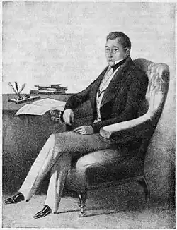

Грибоєдов Олександр Сергійович, драматург, поет, дипломат. Народився в дворянській родині. Дитинство провів у Москві і маєтку свого дядька (по матері) А. Ф. Грибоєдова – Хмелите Смоленської губ. Отримав домашню освіту під керівництвом В. Б. Петрозилиуса, вченого-енциклопедиста, пізніше служив у Московському університеті на посаді помічника бібліотекаря. У 1803 р. Грибоєдов навчався в Благородному пансіоні при Московському університеті (Московські відомості. 1803. 26 грудня. С. 1687). 30 січня 1806 р. зарахований у студенти Московського університету. За спогадами його університетського товариша в. І. Лыкошина, Грибоєдов відвідував лекції в супроводі свого гувернера і "в ребячестве вчився посередньо", тим не менше, після півтора років навчання витримав іспит на ступінь кандидата словесності, присуджену йому на урочистому університетському акті 30 червня 1808 р.
В період навчання Грибоєдов відвідував літературні зібрання дворян – студентів Московського університету в будинку кн. І. Д. Щербатова, куди входили його кузени П. Я. М. Я. Чаадаевы, їх учитель, талановитий поет З. А. Буринський, земляк Грибоєдова на Смоленщині І. Д. Якушкін, а також можливо, Н.І.Тургенєв, Д. А. Облеухов та ін. Разом з братами Чаадаевыми, Якушкіним і Щербатовим Грибоєдов навчається приватним чином у відомого філософа і антиковеда професора В. Т. Буля, якого згодом назве своїм головним університетським наставником. Лекції Буле пробуджують в юнакові зазначений пізніше його друзями інтерес до російської історії, формують "смак і думка" в літературі. Університетські суперечки тих років стають предметом для першого додатка Грибоєдовим сатиричного таланту. Суперництво німецьких і російських професорів, і зокрема боротьба між І. Т. Буля і М. Т. Каченовским, який претендував на займану першим університетську кафедру, відбилася в сюжеті комедії Грибоєдова "Дмитро Дрянской" (ок. 1810 р., не збереглася).
Навчання у Буля заохочувала Грибоєдова до продовження університетських занять. У 1810/11 р. як бухгалтер-ревізор, а з 1811/12 р. знову як своекоштного студента Грибоєдов (разом з новим гувернером Б. В. Іоном) слухає лекції професорів етико-політичного відділення – Рейнгарда, Штельцера, Шлецера і Сандунова, бере уроки латинської мови у Ст. Ст. Шнейдера, готуючись до іспитів на ступінь доктора прав. Серед його університетських знайомих цього часу – А. Н.Панін, М. Н.Муравйов. У Москві Грибоєдова застає початок Вітчизняної війни, і, як і багато молодих людей його покоління, він поступає на військову службу, записавшись в створений на пожертви графа Салтикова Московський гусарський полк. У липні 1812 р. відбуваються останні зустрічі Грибоєдова з Буля, який знайомить свого вихованця з перебували в Москві в свиті Олександра I прусським міністром у вигнанні бароном Штейном. У бойових діях 1812-13 рр .. Грибоєдов участі не брав. Вийшовши у відставку в березні 1816 р. він зробив ще одну спробу повернутися до наукового кар'єрі, маючи намір відправитися в Дерптський університет, проте в результаті, у червні 1817 р. (майже одночасно з А. С. Пушкіна і В. К. Кюхельбекер) надходить на службу в колегію іноземних справ. У Петербурзі Грибоєдов зближається зі світською середовищем письменників, акторів і театралів. В результаті участі в трагічної дуелі різко змінивши своє життя, з серпня 1818 р. Грибоєдов – секретар російської дипломатичної місії в Персії. В Тавризе в 1820 р. народжується задум комедії "Горі від розуму" (закінчена в 1824 р.), в якому відобразилися, серед іншого, і багато враження Грибоєдова від університетського життя в допожарной Москві (Університетський викладач англійської мови і літератури, вчитель і друг Грибоєдова Ф. Я. Еванс стверджував пізніше, що був особисто знайомий з усіма персонажами "Горя від розуму"). З 1822 по 1826 р. Грибоєдов служить на Кавказі при штабі А. П. Єрмолова, з січня по червень 1826 р. перебуває під арештом у справі декабристів. Отримав виправдувальний атестат, причому на аудієнцію Миколи I в Єлагін палац його привіз у власній колясці М. Н.Муравйов, "університетський товариш, не видевшийся з ним вже 16 років". З 1827 р. при новому каместнике Кавказу В. Ф. Паскевиче відає дипломатичними зносинами з Туреччиною і Персією. Після укладення Туркманчайского світу (1828), в якому Грибоєдов взяв активну участь та текст якого привіз до Петербурга, був призначений повноважним міністром у Персію для забезпечення виконання умов договору. У Тифлісі в серпні 1828 р. одружився Н.А.Чавчавадзе, дочки грузинського поета і громадського діяча. 30 січня 1829 р. загинув від рук мусульман-фанатиків, які захопили російську місію в Тегерані. Похований у Тифлісі в монастирі св. Давида. Літературна спадщина Грибоєдова, що включає вірші, п'єси, шляхові записки та інші прозові уривки налічує понад 30 творів, проте велика кількість його задумів залишилося нереалізованими і, разом з загибеллю його паперів, втрачено для нащадків.